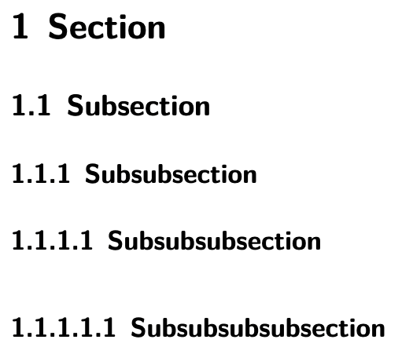
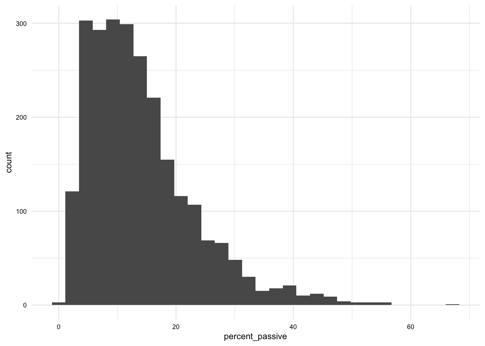
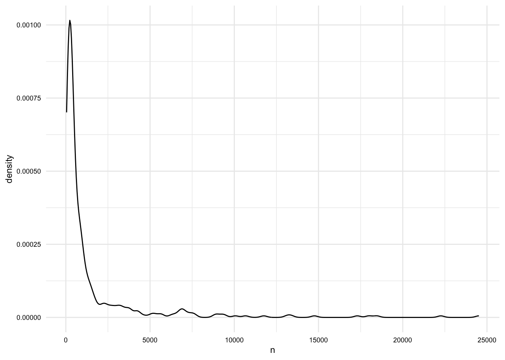
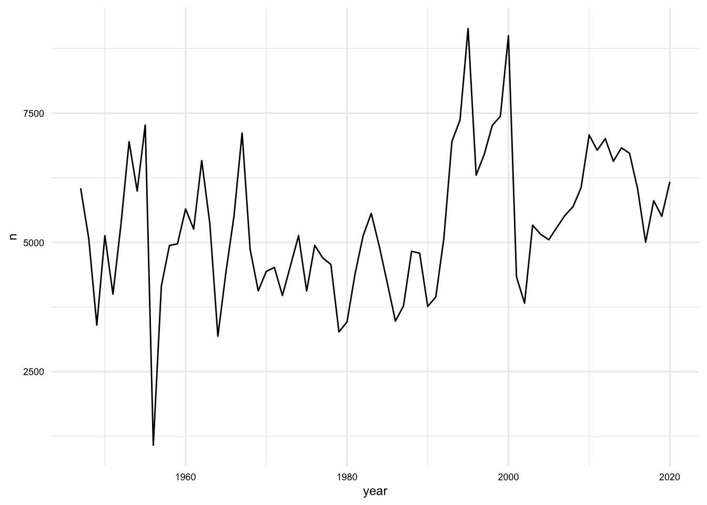

Resources Kit
Guides
Recipes
Instructors
Recipes
00. Literate Programming
An introduction to Quarto
In this recipe, we will introduce the concept of Literate Programming and describe how to implement this concept through Quarto. I will provide a demonstration of some of the features of Quarto and describe the main structural characteristics of a Quarto document to help you get off and running writing your own documents that combine code and prose.
8 min
1,449 words

01. Academic writing with Quarto
Key Quarto features for academic writing
The implementation of literate programming we are using in this course is Quarto with R. As we have seen in previously, Quarto provides the ability to combine prose and code in a single document. This is a powerful strategy for creating reproducible documents that can be easily updated and shared.
12 min
2,312 words
02. Reading, inspecting, and writing datasets
Basics of working with datasets in R
This Recipe guides you through the process of reading, inspecting, and writing datasets using R packages and functions in a Quarto environment. You’ll learn how to effectively combine code and narrative to create a reproducible document that can be shared with others.
16 min
3,199 words

03. Descriptive assessment of datasets
Summarizing data with statistics, tables, and plots
In this Recipe we will explore appropriate methods for summarizing variables in datasets given the number and informational values of the variable(s). We will build on our understanding of how to summarize data using statistics, tables, and plots.
17 min
3,271 words
04. Understanding the computing environment
Identify layers of computing environments and preview Git and GitHub workflows
In this recipe, we will learn how to scaffold a research project and how to use the tools and resources available to us to manage research projects. We will build on our understanding of the computing environment and the structure of reproducible projects and introduce new features of Git and GitHub.
11 min
2,136 words
05. Collecting and documenting data
Acquiring datasets with the Project Gutenberg API
At this point, we now have a strong undertanding of the foundations of programming in R and the data science workflow. Previous lessons, recipes, and labs focused on developing these skills while the chapters aimed to provide a conceptual framework for understanding the steps in the data science workflow. We now turn to applying our conceptual knowledge and our technical skills to accomplish the tasks of the data science workflow, starting with data acquisition.
25 min
4,822 words
06. Organizing and documenting data
Curating semi-structured data
After acquiring data, the next step in process is to organize data that is not tabular into a curated dataset. A curated dataset is a tidy dataset that reflects the data without major modifications. This dataset serves as a more general starting point for further data transformation. In this recipe, we will focus on curating data from a semi-structured format.
25 min
4,849 words

07. Transforming and documenting data
Prepare and enrich datasets for analysis
The curated dataset reflects a tidy version of the original data. This data is relatively project-neutral. A such, project-specific changes are often made to bring the data more in line with the research goals. This may include modifying the unit of observation and/ or adding additional attributes to the data. This process may generate one or more new datasets that are used for analysis. In this recipe, we will explore a practical example of transforming data.
19 min
3,663 words

08. Employing exploratory methods
Descriptive analysis and unsupervised machine learning
Exploratory analysis is a wide-ranging term that encompasses many different methods. In this recipe, we will focus on the methods that are most commonly used in the analysis of textual data. These include frequency and distributional analysis, clustering, and word embedding models.
29 min
5,781 words
09. Building predictive models
Supervised machine learning
This recipe will cover the process of building a predictive model to classify text into one of three Spanish dialects: Argentinian, Mexican, or Spanish. We will take a step-by-step approach that includes data preparation, model training and evaluation, and result interpretation. We will see practical examples of how to apply the {tidymodels} framework to build and evaluate a predictive model.
29 min
5,752 words
10. Building inference models
Simulation-based Null Hypothesis Testing
In this recipe, we will explore statistical modeling and data analysis with using a practical research hypothesis in the area of Second Language Acquisition and Teaching. We’ll use {infer} to understand inference-based models. You’ll learn how to work with key variables, examine data distributions, and employ statistical methods to test hypotheses about their relationships. Our discussion will also involve improving our computing skills through practical exercises in data manipulation, visualization, and statistical analysis. This will provide you with the necessary tools to prepare, conduct, and interpret complex datasets and analyses.
17 min
3,271 words
11. Sharing research
Communicating research findings
In this recipe, I cover the tools and strategies for sharing research findings with the public and peers. We will begin assuming we are using Quarto websites as the primary tool for sharing research findings in both forums. From there, we will enter into some of the details of articles, presentations, and publishing research code and data.
13 min
2,411 words
No matching items